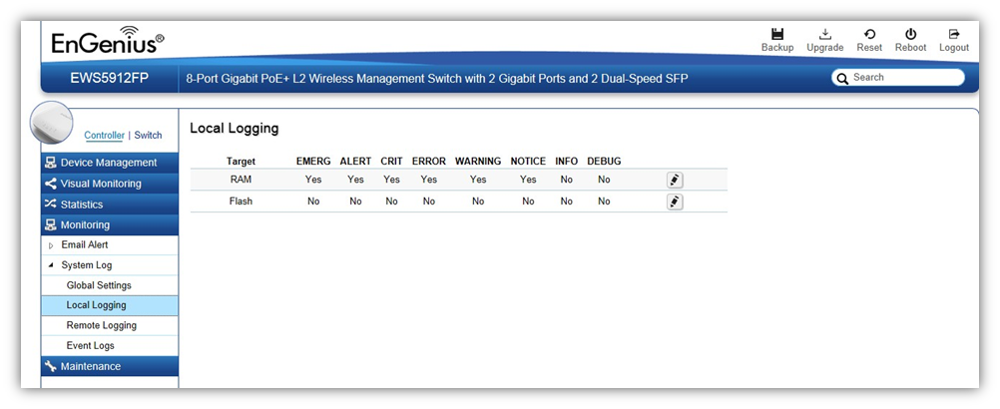

Monitoring > System Log > Local Logging
The System Log is designed to monitor the operation of the EWS Switch by recording the event messages it generates during normal operation. These events may provide vital information about system activity that can help in the identification and solutions of system problems. The EWS Switch supports log output to two directions: Flash and RAM. The information stored in the system’s Flash log will be lost after the Switch is rebooted or powered off, whereas the information stored in the system’s RAM will be kept effective even if the Switch is rebooted or powered off. The log has a fixed capacity; at a certain level, the EWS Switch will start deleting the oldest entries to make room for the newest.

Severity Level
RFC 5424 defines eight severity levels:
Code |
Severity |
Description |
General Description |
0 |
EMERG |
System is unusable. |
A "panic" condition usually affecting multiple apps/servers/sites. At this level it would usually notify all tech staff on call. |
1 |
ALERT |
Action must be taken immediately. |
Should be corrected immediately, therefore notify staff who can fix the problem. An example would be the loss of a primary ISP connection. |
2 |
CRIT |
Critical conditions. |
Should be corrected immediately, but indicates failure in a secondary system, an example is a loss of a backup ISP connection. |
3 |
ERROR |
Error conditions. |
Non-urgent failures, these should be relayed to developers or admins; each item must be resolved within a given time. |
4 |
WARNING |
Warning conditions. |
Warning messages, not an error, but indication that an error will occur if action is not taken, e.g. file system 85% full - each item must be resolved within a given time. |
5 |
NOTICE |
Normal but significant condition. |
Events that are unusual but not error conditions - might be summarized in an email to developers or admins to spot potential problems - no immediate action required. |
6 |
INFO |
Informational messages. |
Normal operational messages - may be harvested for reporting, measuring throughput, etc. - no action required. |
7 |
DEBUG |
Debug-level messages. |
Info useful to developers for debugging the application, not useful during operations. |
Created with the Personal Edition of HelpNDoc: Create iPhone web-based documentation